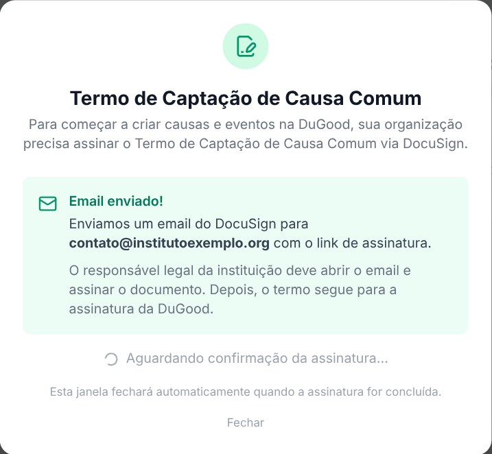
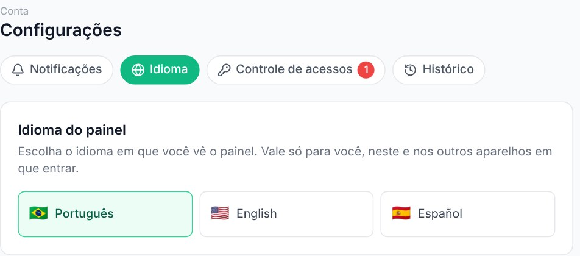
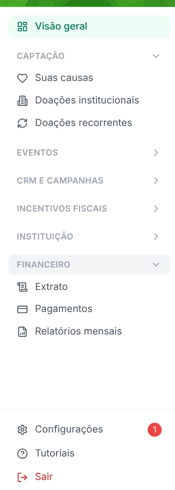
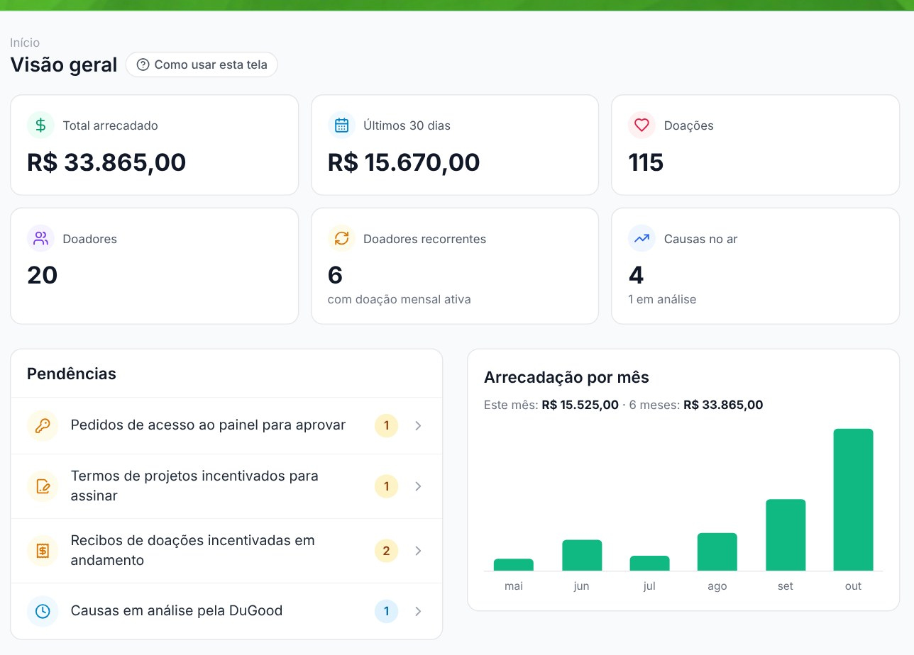
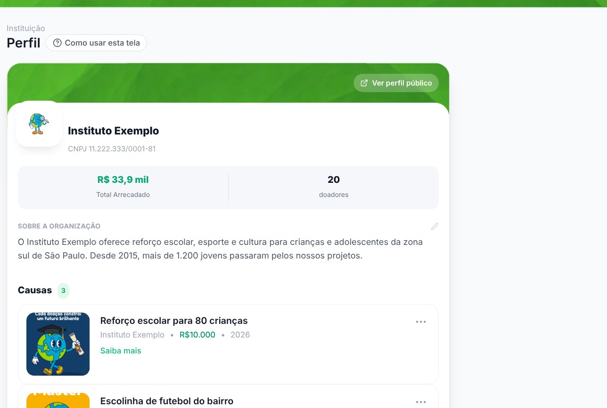
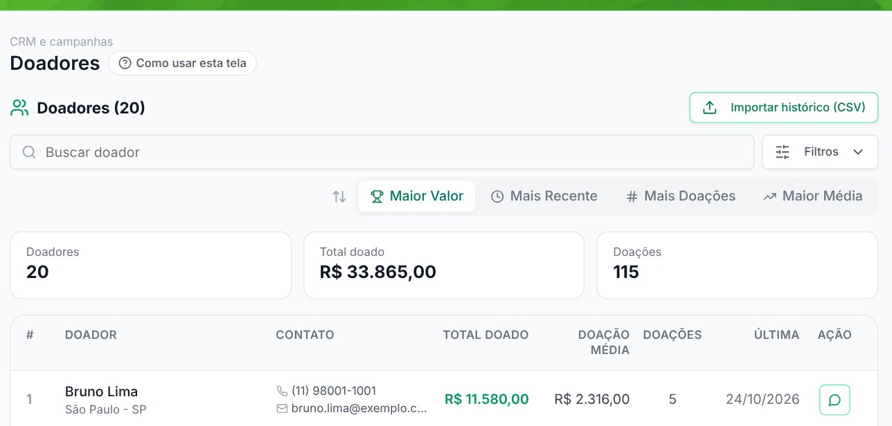
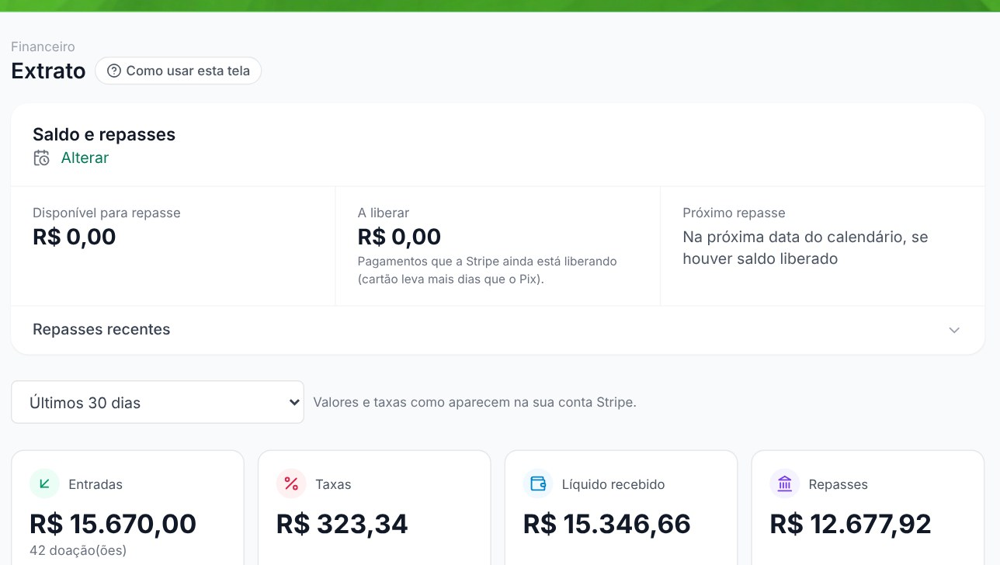

Como usar este guia
A DuGood é a plataforma de doações onde a sua instituição recebe doações para causas, doações mensais e inscrições em eventos, com um painel para cuidar de doadores, finanças e relatórios. Este guia explica, um assunto por página, tudo o que é preciso para deixar o painel pronto.
Na primeira vez, leia na ordem: cada página depende da anterior. Depois, use como consulta. O mesmo conteúdo está no vídeo tutorial que acompanha este guia.
Neste guia
- Antes de começar
- Entrar no painel
- Assinar o termo de entrada
- Convidar a equipe
- O que cada pessoa vê ou edita
- Avisos por e-mail
- Idioma
- O menu do painel
- Visão geral e ajuda
- Perfil da instituição
- Pagamentos e repasses
- A primeira causa
- Divulgar e acompanhar
- Dúvidas frequentes
Tenha à mão
- O link de cadastro da instituiçãoEnviado pela equipe da DuGood. É por ele que a primeira pessoa entra no painel.
- Acesso ao e-mail da instituiçãoO termo de entrada chega nesse e-mail, e os avisos do painel também.
- O responsável legalÉ quem assina o termo de entrada em nome da instituição.
- Os dados da instituição e da conta bancáriaPara o perfil público e para ativar os pagamentos com a Stripe.
A ONG recebe 100% das doações
A DuGood não cobra taxa da instituição nem de quem doa, e as ferramentas do painel são grátis. Só a Stripe, empresa que processa os pagamentos, cobra as tarifas dela, que aparecem no painel antes de você escolher os meios de pagamento.

O primeiro acesso, pelo link de cadastro
A entrada no painel da instituição é sempre pelo link de cadastro que a DuGood mandou. É ele que liga a sua conta ao painel da sua instituição.
Passo a passo
- Abra o link de cadastro.Funciona no computador e no celular. A tela de entrada da DuGood abre.
- Entre com Google, Apple ou e-mail e senha.Se você já usa a DuGood para doar, pode usar a mesma conta.
- Sem conta? Clique em Cadastrar.Informe e-mail, telefone, CPF e uma senha. Um código chega no seu e-mail: digite-o para confirmar.
- Pronto: o painel abre.Nas próximas vezes, basta entrar em dugood.com.br com a mesma conta.

Quem entra primeiro vira o administrador
A primeira pessoa que entra pelo link vira o administrador do painel: tem acesso a tudo e decide quem mais entra. Quem entra depois pelo mesmo link não entra direto: pede acesso, e o administrador recebe um aviso por e-mail para aprovar (página 04).
Combine quem entra primeiro. O ideal é que seja a pessoa que vai cuidar do painel no dia a dia. Se precisar, a administração pode ser passada para outra pessoa depois.
Um e-mail, um painel. Cada conta da DuGood fica ligada a um painel só. Se a pessoa já usa o e-mail no painel de outra ONG, de uma loja ou de um organizador de eventos, precisa entrar com outro e-mail.

O contrato da instituição com a DuGood
O Termo de Captação de Causa Comum é o contrato de entrada da instituição na DuGood. É um termo único: vale para todas as causas e eventos comuns e é necessário para começar a criar causas e eventos. A assinatura é eletrônica, pelo DocuSign, sem papel.
Passo a passo
- Peça a assinatura no painel.Em Instituição › Documentos, clique em Assinar no Termo de Captação de Causa Comum. Pode ser qualquer pessoa da equipe com acesso para editar o bloco Instituição.
- O e-mail do DocuSign chega na instituição.Vai para o e-mail da instituição (o de Instituição › Perfil), com o link de assinatura. A tela confirma para qual e-mail foi.
- O responsável legal assina.Ele abre o e-mail, lê o termo e assina pelo próprio DocuSign, no computador ou no celular.
- A DuGood assina também.Depois da instituição, o termo segue para o representante legal da DuGood. Com as duas assinaturas, o termo assinado fica disponível em Documentos.


| Situação no painel | O que significa |
|---|---|
| Pendente | A instituição ainda não assinou. Clique em Assinar para receber o e-mail. |
| Aguardando assinatura da DuGood | A instituição já assinou. Falta só a DuGood, e não é preciso fazer mais nada. |
| Assinado | Tudo certo. O termo assinado fica em Instituição › Documentos. |
O e-mail não chegou? Confira o spam e o e-mail em Instituição › Perfil. Se continuar sem chegar, fale com a DuGood. Dica: na mesma tela, envie o estatuto, o cartão CNPJ e a ata; não é obrigatório, mas agiliza a análise.

Mais gente cuidando do painel
Cada pessoa da equipe entra com a própria conta, pelo mesmo link de cadastro da instituição. Assim cada um tem o seu login, e você controla quem entra e o que cada um pode fazer, sem compartilhar senha.

Passo a passo
- Copie o link de cadastro.Clique em Copiar e mande para a pessoa como preferir, ou use Enviar no WhatsApp.
- A pessoa entra pelo link.Ela entra com a conta dela (ou cria uma). O painel ainda não abre: fica o pedido de acesso.
- Você recebe o aviso e aprova.Chega um e-mail para o administrador, e o pedido aparece em Controle de acessos e nas Pendências da Visão geral. Clique em Aprovar ou Recusar.
- Pronto: a pessoa já pode usar o painel.Quem é aprovado começa podendo editar tudo. Para limitar, veja a próxima página.
O link foi parar onde não devia? Clique em Gerar novo link. O link antigo para de funcionar na hora, e quem já tem acesso continua com acesso. Pedidos de pessoas que você não conhece podem ser recusados.

Acesso por bloco do menu
Nem todo mundo precisa ver tudo: um voluntário que só lê os ingressos no evento não precisa ver o financeiro, por exemplo. Para cada pessoa, você escolhe o acesso a cada bloco do menu: Início, Captação, Eventos, CRM e campanhas, Incentivos fiscais, Instituição e Financeiro.
| Nível | O que acontece para a pessoa |
|---|---|
| Sem acesso | O bloco some do menu dela, como se não existisse. |
| Ver | Ela vê as telas do bloco, com um aviso de que o acesso é só para ver, e não consegue salvar nada. |
| Editar | Ela vê e muda tudo no bloco. É o padrão para quem acabou de ser aprovado. |

Um administrador por painel
- Cada painel tem um administrador só. Ele tem acesso a tudo, é o único que vê o Controle de acessos e o único que muda os avisos por e-mail.
- Passar administração: quando a pessoa responsável muda (alguém sai da instituição, por exemplo), o administrador passa o papel para outra pessoa da equipe.
- Bloquear, liberar e excluir: bloquear tira o acesso na hora, e dá para liberar de novo depois. Excluir tira a pessoa da lista: se ela entrar pelo link outra vez, vira um pedido novo.
Alguém saiu da equipe? Bloqueie ou exclua o acesso da pessoa no mesmo dia. Se era o administrador, ele deve passar a administração antes de sair.
Escolha como saber das doações
Toda doação e inscrição pode virar um e-mail para a instituição. Para quem recebe muitas, é melhor juntar tudo num resumo. Você escolhe o ritmo de cada tipo de aviso.
Os três tipos de aviso
- Quando alguém doar para a instituição ou para uma causa dela.
- Quando alguém se inscrever num evento da instituição.
- Quando alguém se inscrever num evento de terceiro em prol da instituição (por exemplo, uma corrida de uma assessoria esportiva que doa para vocês).
As opções de cada um
- A cada vez: um e-mail por doação ou inscrição.
- Resumo diário, semanal (segunda-feira) ou mensal (dia 1): um e-mail só, com tudo do período.
- Nunca: sem e-mail desse tipo. As doações continuam aparecendo no painel.

Para parar tudo de uma vez, marque Desligar todas as notificações da plataforma: saem os avisos de doação e inscrição e os resumos. Sem nada escolhido, vale a cada vez para tudo.
Avisos importantes chegam sempre. Pedidos de acesso ao painel, eventos para aprovar e outros avisos de operação não dependem dessas escolhas, para que nada fique parado.
O painel em português, inglês ou espanhol
Cada pessoa da equipe escolhe o idioma em que vê o painel. É útil para voluntários e parceiros de outros países: cada um vê no seu idioma, sem mudar nada para os outros.

Como funciona
- Escolha Português, English ou Español.A página recarrega já no idioma novo.
- Vale em todos os seus aparelhos.A escolha fica na sua conta: no computador e no celular, o painel abre no mesmo idioma.
- Não muda nada para a equipe.Cada pessoa tem o seu idioma.
E os doadores?
Quem doa recebe tudo no idioma dele: a página de pagamento, os e-mails de confirmação, os ingressos e as notificações saem em português, inglês ou espanhol, conforme o idioma em que a pessoa usa a DuGood. Textos escritos pela instituição (como a descrição de uma causa ou uma atualização para doadores) aparecem como vocês escreveram.
Relatórios também. Ao baixar o relatório mensal, você escolhe na própria tela em que idioma ele sai, sem trocar o idioma do painel.

Tudo organizado em blocos
O menu fica à esquerda e é dividido em blocos. Clique no nome do bloco para abrir as telas dele. O bloco da tela em que você está fica com o título em verde.
| Bloco | O que tem |
|---|---|
| Início | Visão geral: arrecadado, doações, doadores, pendências e arrecadação por mês. |
| Captação | Suas causas, doações institucionais (direto para a instituição, sem causa) e doações recorrentes (mensais). |
| Eventos | Eventos com inscrição que vira doação, leitura dos ingressos na portaria e como funciona. |
| CRM e campanhas | CRM (calendário, tarefas e réguas de contato), doadores, composição da base, campanhas com link e QR, sorteios e leilões. |
| Incentivos fiscais | Dados fiscais, projetos incentivados, doações incentivadas e recibos. Só para projetos com incentivo fiscal. |
| Instituição | Perfil (a página pública), documentos e o widget para o site. |
| Financeiro | Extrato, pagamentos (Stripe, meios de pagamento e repasses) e relatórios mensais. |

No rodapé do menu
- Configurações: notificações, idioma e, para o administrador, o Controle de acessos e o Histórico (quem fez o quê no painel). Uma bolinha vermelha mostra pedidos de acesso esperando.
- Tutoriais: os passo a passos de cada parte do painel.
- Sair: encerra a sua sessão neste aparelho.
Não está vendo um bloco? Provavelmente o administrador deixou esse bloco como "Sem acesso" para você (página 05). Fale com ele.

O resumo da instituição, todo dia
A Visão geral é a primeira tela do painel. Em poucos segundos ela mostra como está a captação e o que precisa da sua atenção. Comece o dia por ela.

O que tem na tela
- Os números: total arrecadado, últimos 30 dias, doações, doadores, doadores recorrentes e causas no ar.
- Pendências: o que espera uma ação, como pedidos de acesso, termos para assinar, recibos em andamento e causas em análise pela DuGood. Clique na pendência para ir direto à tela certa.
- Arrecadação por mês e as doações recentes.
- No começo, a tela mostra também o que falta no cadastro (perfil, recebimento, termo, primeira causa), com um botão para cada passo.
Ficou com dúvida em alguma tela? Clique em Como usar esta tela, ao lado do título: um passo a passo curto mostra o que cada parte faz. Os tutoriais completos ficam em Tutoriais, no rodapé do menu.

A página que os doadores veem
O perfil é a página pública da instituição na DuGood: é onde o doador conhece vocês antes de doar. Um perfil completo, com boa descrição e fotos, passa confiança e ajuda a captar mais.
O que preencher
- Nome e logo da instituição.
- Sobre a organização: a história, a missão e o impacto. Conte o que vocês fazem, para quem e com que resultados.
- Contato: pelo menos um, para que os doadores possam falar com vocês.
- Endereço.
- Fotos e vídeos do trabalho de vocês.
A tela já mostra o perfil do jeito que o doador vê, com as causas ativas. Use Ver perfil público para conferir.

Logo, descrição, endereço e telefone são obrigatórios para criar causas. Enquanto faltar algum, a Visão geral avisa o que falta.
Confira o e-mail da instituição. É para ele que vão o termo de entrada, os avisos de doação e os resumos.

Como o dinheiro chega à instituição
As doações são pagas numa conta da instituição na Stripe, a empresa que processa os pagamentos. Do saldo na Stripe, o dinheiro vai para a conta bancária da instituição nos repasses. A DuGood não fica com nada no caminho.
- Conecte a conta Stripe.É feito uma vez só, com os dados da instituição e a conta bancária. Sem ela não é possível criar causas nem receber doações.
- Escolha os meios de pagamento.Cartão e Pix já vêm ligados. O boleto pode ser ligado para doações avulsas. A tarifa da Stripe de cada meio aparece ao lado. Sem cartão não há doação mensal.
- Escolha a frequência dos repasses.Diário, semanal (com o dia), mensal (com o dia) ou sob demanda, em que você repassa quando quiser pelo Extrato.

Bom saber
- Abrir painel da Stripe leva ao painel da Stripe da instituição: recebimentos, documentos da conta e reembolsos.
- Por segurança, a troca de conta bancária é feita no painel da Stripe, com confirmação de identidade.
- Pagamentos com cartão levam alguns dias para ficar disponíveis; o Pix é mais rápido. No Extrato você vê o saldo disponível, o que está a liberar e o próximo repasse.
- Em cada causa, você pode escolher que quem doa pague a tarifa da Stripe (Taxa de pagamento, na causa). Assim a instituição recebe o valor cheio.
A Stripe pode pedir documentos para confirmar a conta. Se aparecer um aviso de pendência no painel, abra o painel da Stripe e complete o que falta, para os repasses não pararem.

Do rascunho à causa no ar
A causa é o pedido de doação: um projeto, uma necessidade ou uma campanha, com meta. É ela que aparece no app para os doadores. Toda causa passa pela análise da DuGood antes de ir ao ar.

Passo a passo
- Preencha a causa.Título, descrição (o problema, o que será feito e o impacto), categoria, meta em reais, imagem principal e doação mínima. Se quiser, uma mensagem especial que vai para quem doar.
- Escolha a visibilidade.Pública (aparece no app, na página da instituição e na busca) ou Somente com link (só quem recebe o link vê e doa).
- Envie para aprovação.A causa fica como Aguardando Aprovação, e a Visão geral mostra que está em análise pela DuGood.
- Ative quando for aprovada.Com a causa Aprovada, clique em Ativar e Tornar Visível. Pronto: ela está no ar e recebendo doações.
A causa voltou com ajustes? Corrija o que a DuGood apontou e use Corrigir e Reenviar para Aprovação. Eventos funcionam do mesmo jeito, em Eventos, com ingressos e inscrição que vira doação.
Projetos com incentivo fiscal (Lei Rouanet, FIA, PRONON etc.) ficam em Incentivos fiscais, com os dados fiscais e um termo próprio por projeto.

Fazer a causa chegar às pessoas
Com a causa no ar, é hora de divulgar e de cuidar de quem doa. O painel tem as ferramentas para as duas coisas.
Para divulgar
- Link da causa: use Copiar link na causa e mande pelas redes sociais, WhatsApp e e-mail.
- Campanhas (CRM e campanhas › Campanhas): links e QR codes rastreados, para saber quantas visitas e doações vieram de cada ação (um post, um cartaz, um evento).
- Widget para o site (Instituição › Widget para o site): um código para colar no site da instituição, que mostra a página de vocês com o botão de doar.
- Atualizações aos doadores: em cada causa, Enviar atualização aos doadores manda notícias por e-mail e notificação para quem já doou.
Para acompanhar


- Doadores: a base de quem doou, com contato, total doado e histórico de cada pessoa.
- CRM: tarefas e réguas de contato (como agradecer a primeira doação). O envio é sempre manual: o WhatsApp ou o e-mail abre com o texto pronto e a equipe confirma.
- Extrato: entradas, tarifas, valor líquido e repasses. Relatórios mensais: o resumo do mês em PDF.
Agradeça rápido. Um contato logo depois da primeira doação faz muita diferença para a pessoa doar de novo. As réguas do CRM lembram a equipe disso.
Perguntas que sempre aparecem
Quanto a DuGood cobra?
Nada. A DuGood não cobra taxa da instituição nem de quem doa, e as ferramentas do painel são grátis. A Stripe cobra as tarifas dela por pagamento, que aparecem em Financeiro › Pagamentos. Em cada causa, você pode deixar a tarifa por conta de quem doa.
O e-mail do termo de entrada não chegou.
Confira a caixa de spam e se o e-mail da instituição está certo em Instituição › Perfil. Se continuar sem chegar, fale com a DuGood, que confere o envio.
Alguém da equipe entrou, mas o painel não abre.
O pedido de acesso precisa ser aprovado pelo administrador em Configurações › Controle de acessos. Se a pessoa já aparece com acesso, confira os blocos dela: um bloco em "Sem acesso" some do menu.
O administrador saiu da instituição.
Se ele ainda consegue entrar, use Passar administração para outra pessoa da equipe. Se não consegue, fale com a DuGood.
Posso usar o mesmo e-mail em dois painéis?
Não. Cada conta fica ligada a um painel só. Use outro e-mail para o outro painel.
Por que a minha causa ainda não aparece no app?
Toda causa passa pela análise da DuGood e fica "Em análise" na Visão geral. Depois de aprovada, falta clicar em Ativar e Tornar Visível. Causas "Somente com link" não aparecem na busca, só para quem tem o link.
Quando o dinheiro cai na conta bancária?
Conforme a frequência de repasses escolhida em Financeiro › Pagamentos, assim que a Stripe libera o saldo (cartão leva mais dias que o Pix). No Extrato aparecem o saldo a liberar e o próximo repasse.
Como troco a conta bancária?
Pelo painel da Stripe (Financeiro › Pagamentos › Abrir painel da Stripe), com confirmação de identidade.
Conte com a gente
Ficou alguma dúvida? Fale com a DuGood: comercial@dugood.com.br · WhatsApp (11) 99429-9400